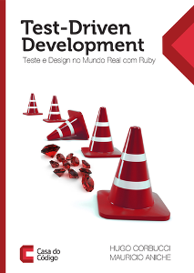

Nota sobre o livro Test-Driven Development: Teste e Design no Mundo Real com Ruby
Divulgando um livro que acabei de ler e que achei legal pra caramba!

Tenho um projeto para ajudar a desenvolver com TDD, e mais, ajudar a desenvolver usando código já pronto, para o qual se deve implementar o que é pedido. Uma forma de treinar o que eu acho ideal na vida profissional:
https://github.com/paulohrpinheiro/artigos
E o Ruby está há muito tempo na lista de universos a explorar.
Juntando isso, fiquei interessado por esse livro, por pensar que me daria uma boa imersão no desenvolvimento Ruby. E foi o que aconteceu. Além do TDD, muita coisa interessante do Ruby.
Mais que isso, apenas começando a leitura já pude fazer os testes para Ruby em meu projeto, mesmo não sabendo nada de Ruby.
Mas o melhor é que o livro vai além. Discute Orientação a Objeto. Quase todo o livro, o que há de mais denso é o que está escrito a respeito de OOP.
Ao pensar nas características de um novo programa, de um novo projeto, ao começarmos a escrever os testes e ver na prática o que pensamos a respeito das classes e seus relacionamento, o código vai ganhando em robustez e qualidade.
Esse livro faz o que um bom livro deve fazer: uma chamada à crítica, uma apresentação de novos rumos. Com o que li posso afirmar que sou um melhor programador.
Leitura obrigatória!